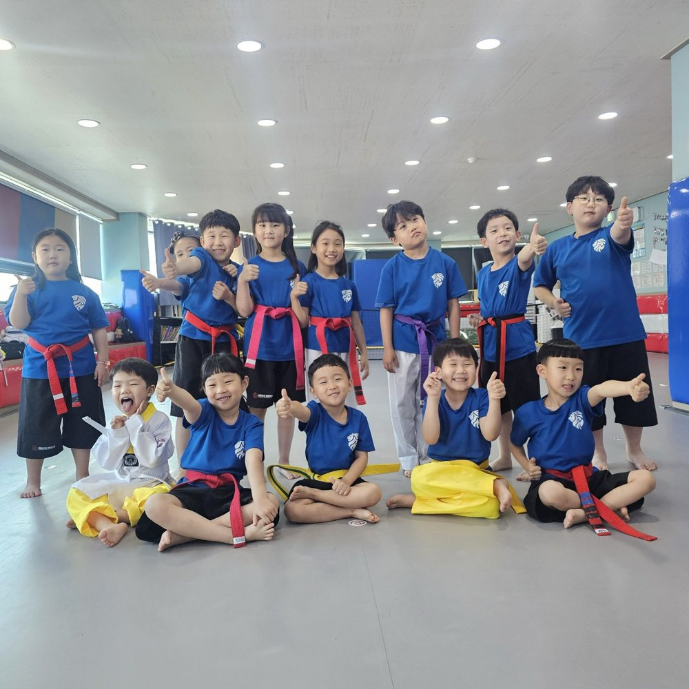

대인관계에 대한
태도에 관한 생각

태도사전적 정의
·어떤 일이나 상황 따위를 대하는 마음가짐 또는 그 마음가짐이 드러난 자세
·어떤 일이나 상황 따위에 대해 취하는 입장
태도에 대한 사전적 정의입니다.
오래전 군에서 있을 때나 체육대학에서 있을 때나
“요즘 젊은 애들은”
이라는 말이 항상 있었습니다. 사실 저는 그 말에 대해 많이 신경쓰지 않았었는데,
태권도를 처음 지도한 날로부터 어느덧 많은 시간이 흘렀다 보니 확실히 요즘 학생들이 처음 지도했던 학생들과의 바이브가 조금 다르다고 느낍니다.
사람은 분명 사회적 동물인데
사회적이기보다 개인적인 모습을 한
학생들의 분포가 좀더 넓어졌다고 느낍니다.
본인을 잘 지키기위해 개인주의가 만연해지고 있다고는 하나 저는 저희 도장에서 지도받는 수련생들이 무분별한 개인주의가 되는 것을 보고만 있을 수 없다고 생각합니다.
왜냐면 저희 지도진들로부터 지도받는 수련생이라면
어떤 사람에게든
만날때마다 반가운 사람이
되어있기를 원하는데,
무조건적으로 개인적이기만한 사람은 자주 만나고 싶을정도로 반갑기가 쉽지않다고 생각합니다.

어떻게하면 요즘 같은 트렌드 속에서도 대인관계를 원만히 하기위해 서로 지켜줘야 할 규칙들을 잘 지킬수 있게 수련생들에게 전할 수 있을까? 생각해보았는데,
溫故知新
의 일환으로 五倫(오륜)을 현대식으로 재 해석 해보았습니다.
해랑인의 자세
- 부자유친(父子有親)
부모는 자녀에게 인자하고 자녀는 부모에게 존중과 섬김을 다한다.
- 사제유의(師弟有義)
사범과 제자의 도리는 의리에 있다.
- 남녀분별(男女分別)
남녀 차이와 차별을 구분하자.
- 장유유서(長幼有序)
어른과 어린이 사이에는 차례와 질서가 있다.
- 붕우유신(朋友有信)
친구 사이에는 신의를 지켜야 한다.
땅이 있어야 집을 지을 수 있듯
태도가 잘 갖춰져 있어야
무엇이든 잘 해낼 수 있을거라
믿습니다.
운동이든 인성이든
기초부터 탄탄히 쌓아가겠습니다 :)